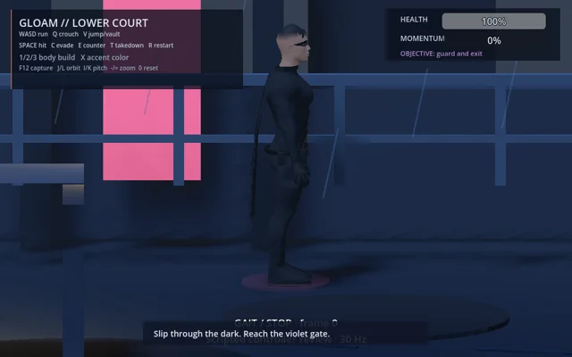
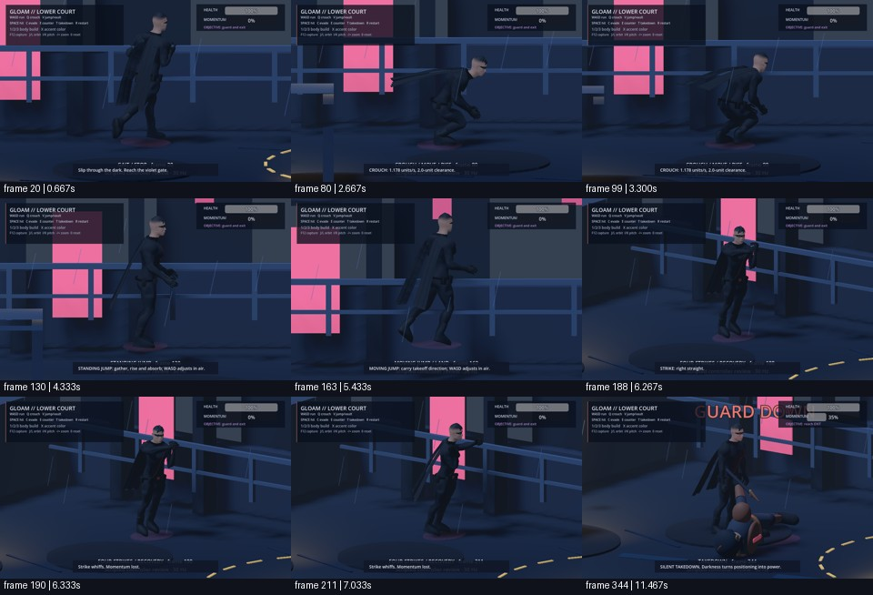

Before
3e4bb12bca1b


After
9134ed315678
Does the spine and shoulder girdle participate naturally through gait, crouch, jumps and combat?
Fixed 30 Hz helper-driven evidence. User visual judgement is pending.
3e4bb12bca1b


9134ed315678